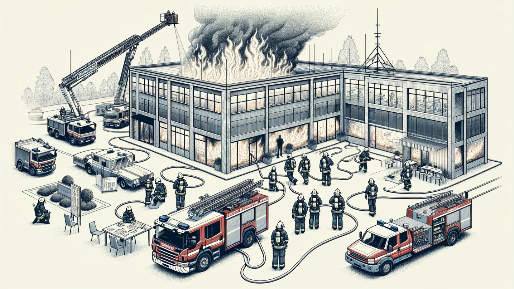
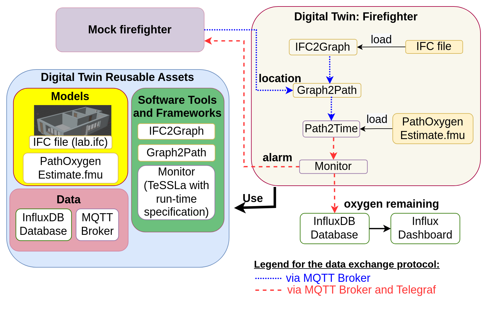
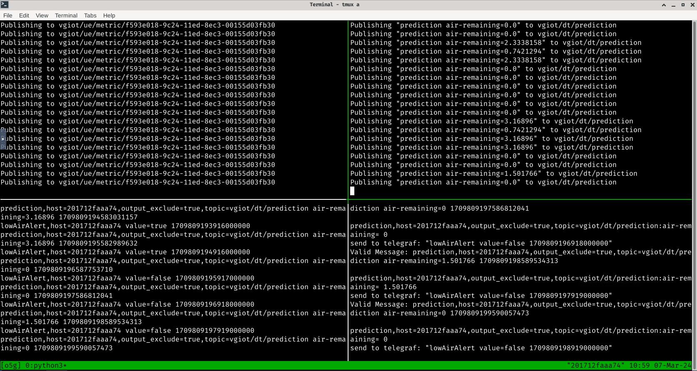
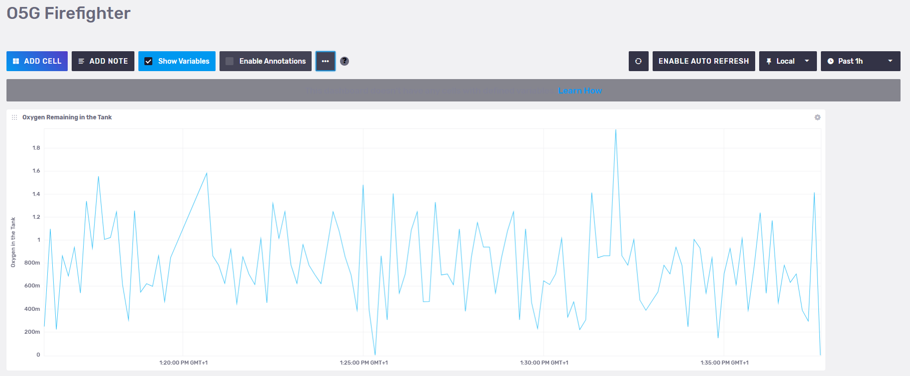

Firefighter Mission in a Burning Building
In an firefighter mission it is important to monitor the oxygen levels of each firefighters Self Contained Breating Aparatus (SCBA) in context of their mission.
Physical Twin Overview

Image: Schematic overview of a firefighter mission. Note the mission commander on the lower left documenting the air supply pressure levels provided by radio communication from the firefighters inside and around the burning building. This image was created with the assistance of DALL·E.
We assume the following scenario:
- a set of firefighters work to extinguish a burning building
- they each use an SCBA with pressurised oxygen to breath
- a mission commander on the outside coordinates the efforts and surveills the oxygen levels
Digital Twin Overview
In this example a monitor is implemented, that calculates how much time the firefighers have left, until they need to leave the building. To that end, the inputs used are:
- 3D-model of the building in which the mission takes place,
- pressure data of a firefighters SCBA and
- firefighters location inside of the building
are used to estimate:
- the shortest way out,
- how much time this will need and
- how much time is left until all oxygen from the SCBA is used up.
The remaining mission time is monitored and the firefighter receive a warning if it drops under a certain threshold.

This example is an implementation of the the paper Digital Twin for Rescue Missions--a Case Study by Leucker et al.
Quick Check
Before runnnig this example please make sure the following files are at the correct locations:
Digital Twin Configuration
All configuration for this example is contained in digital_twins/o5g/config.
To use the MQTT-Server, account information needs to be provided. The topics are set to their default values, which allow the DT to access the mock physical twins sensor metrics and to send back alerts.
This example uses InfuxDB as a data storage, which will need to be configured to use your Access data. The following configuration steps are needed:
- Log into the InfluxDB Web UI
- Obtain org name (is below your username in the sidebar)
- Create a data bucket if you don't have one already in
Load Data -> Buckets - Create an API access token in
Load Data -> API Tokens, Copy and save this token somewhere immediately, you can not access it later!
Lifecycle Phases
The lifecycles that are covered include:
| Lifecycle Phase | Completed Tasks |
|---|---|
| Install | Installs Open Modelica, Rust, Telegraf and the required pip dependencies |
| Create | Create FMU from Open Modelica file |
| Execute | Execute the example in the background tmux terminal session |
| Terminate | Terminate the tmux terminal session running in the background |
| Clean | Delete the temporary files |
Run the example
Install
Run the install script by executing
This will install all the required dependencies from apt and pip, as well as Open Modelica, Rust, Telegraf and the required pip dependencies from their respective repos.
Create
Run the create script by executing
This will compile the modelica model to an Functional Mockup Unit (FMU) for the correct platform.
Exceute
To run the Digital Twin execute
This will start all the required components in a single tmux session
called o5g in the background.
To view the running Digital Twin attatch to this tmux session by executing
To detatch press Ctrl-b followed by d.

The tmux session contains 4 components of the digital twin:
| Panel location | Purpose |
|---|---|
| Top Left | Sensor simulator generating random location and O2-level data |
| Top Right | Main Digital Twin receives the sensor data and calculates an estimate of how many minutes of air remain |
| Bottom Left | Telegraf to convert between different message formats, also displays all messages between components |
| Bottom Right | TeSSLa monitor raises an alarm, if the remaining time is to low. |
Examine the Results
For additional mission awareness, we recommend utilising the Influx data visualisation. We provide a dashboard configuration in the file influx-dashoard.json. Log in to your Influx Server to import (usually port 8086). A screenshot of the dashboard is given here.

The data gets stored in
o5g->prediction->air-remaining->37ae3e4fb3ea->true->vgiot/dt/prediction
variable of the InfluxDB. In addition to importing dashboard configuration
given above, it is possible to create your custom dashboards using
the stored data.
Terminate
To stop the all components and close the tmux session execute
Clean
To remove temoporary files created during execution